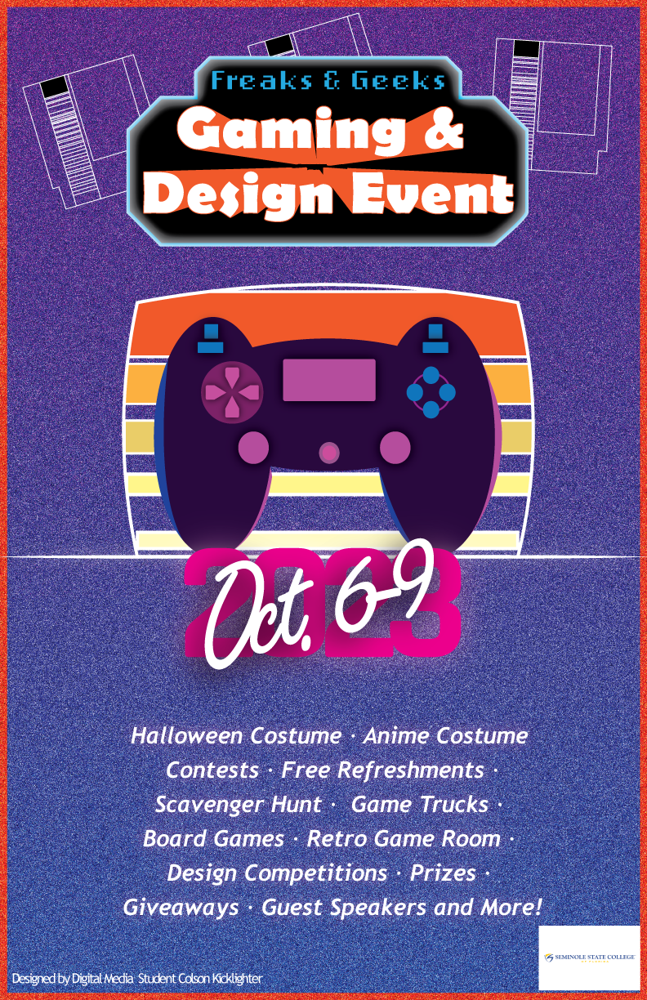
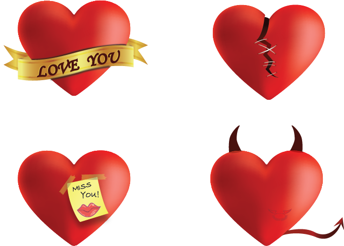
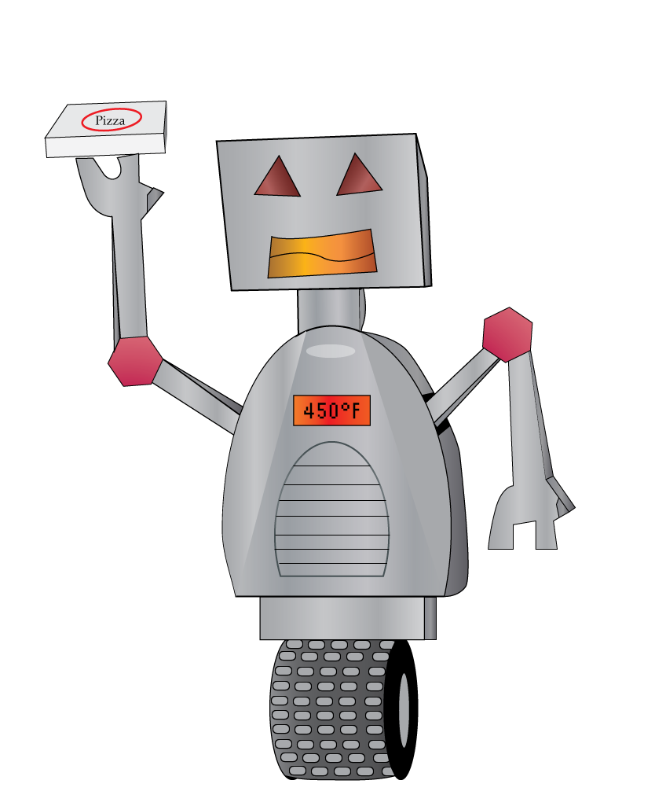

Personal Website

Youtube
Hi! I'm Colson Kicklighter, an aspiring Graphic Designer and Animator.
I currently work at Universal Orlando and do small personal projects on the side.
I'm pursing an assosiates degree in Graphic Design and hope to one day use my knowledge to becoming a film editor or visual effects animator.
Over the years, I have had experience with different programs and gained knowledge through classes and online resources.
Through this class I have also taken an intrest in Web Design and Development.
I hope to one day work at some place that allows me to express my creativity but also give me a direction to work towards.
Personal Website
Instagram
Facebook
Youtube

This is a project for a Photoshop class. It was color corrected by seperating the sky and Mountains and applying a filter to each.

This is a Game Cover I designed for a Photoshop Class. I'd Like the think this is an RPG, or role playing game, reclaiming your families legacy.

This is a poster I designed for an Illustrator claass and submitted for the final design review.

These are 4 different hearts I made through a gradient mesh tutorial on Illustrator.

This is an Illustration I did for an Illustration class. It's a functional robot chef that can make any pizza you desire.